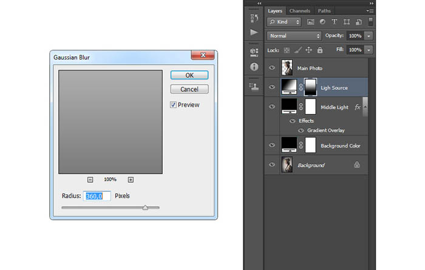
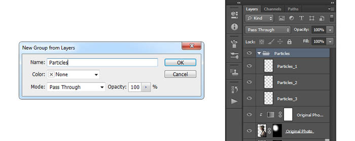

室内人像怎么暗调? ps暗调室内人像教程
2016-09-09来源：第九软件网
唯美的暗调室内人像怎么打造呢?怎么使用photoshop怎么制作出唯美的暗调室内人像方法呢?怎么使用ps人像后期处理呢?下面为大家带来ps暗调人像教程!
作者处理人像非常专业。创作思路：先把人物抠出来；然后设置光源，并根据光源位置制作出唯美的透射光；再微调人物光影；最后增加唯美的颗粒装饰，调整整体颜色和细节即可。
原图
最终效果
一、选择素材
首先在Photoshop打开图片，点击“文件>打开”，然后选择下载的图片，点击确定。在继续下面的操作前，需要检查图片：
1、图片应该采用8位RGB颜色模式。点击“图像>模式”检查。
2、图片的尺寸会影响最终用途效果，图片高宽最好设置在1500~4000像素。点击“图像>图像大小”检查。

二、抠出人物
1、打开图片后，要将人像抠出。常用人像抠出工具有：钢笔工具（P）、套索工具（L）、快速选择工具（W）、魔棒工具（W）。根据不同的使用习惯可以随意选择使用，本次教程中笔者选用的是魔棒工具，只要设置好容差，就可以开始设置选取。运用好shift、Alt将选区增加或者减少，设置过程中还可以同时调整容差，让选择更加精准。
如果背景内容比较单一（如本示例），对背景创建选择，然后选“选择>反转”，就能将选择到人像。
2、创建选区后，选择“图层>新图层>通过拷贝创建”，将从选区中复制图像并创建新图层，这样就获得分离出来的独立人像。双击缩略图进行重命名为“人像”。
三、创建背景
1、选择背景图层，选择“图层>新填充图层>纯色”，创建纯色填充图层。命名为“背景色”，点击确定。这时会弹出窗口供选择颜色，选择黑色#000000，点击确定。
2、重复上面的步骤创建新图层，命名为“光晕”。对着光线图层右击，选择混合选项，勾选渐变叠加，如下图设置。
3、减低光线图层不透明度为25%。
四、创建光源
1、现在创建图像光源，选择“图像>新填充图层>渐变”，创建新的渐变填充图层。命名为“光源”，点击确定。这时会弹出对话框，按下图设置好，点击确定。
2、设计光线会照到人物身上，因此不会直达图像底部，因此需要将下半段的光线给遮蔽掉。这里就用到图层蒙版。选择光线图层，按D或者X将前景色设置为黑色，选择“编辑>填充”。应用如下设置，点击确定。
3、选择图层蒙版，点击套索工具，右击画布，选择自由变换。如下图将遮蔽范围调整到画布下半部，按回车确定。
4、保持图层蒙版作为操作对象，选择“滤镜>模糊>搞死模糊”，如下设置好模糊半径。

5、设置光线图层的混合模式为屏幕、不透明度为85%。
五、合成人物与光线
1、选择人像图层，在图层面板中右击选择混合选项，勾选渐变叠加，设置如下图所示。
2、按着Ctrl点击人像图层的缩略图，将选区调出，选择“选择>修改>收缩”，设置收缩30像素，点击确定。
3、选择“图层>图层蒙版>显示选区”。
4、选择“滤镜>模糊>高斯模糊”，添加高斯模糊，设置模糊半径为160像素。

六、局部增亮
1、下面需要按照光线照射的角度增亮人像的部分位置，选择人像图层，选择“图像>新图层>通过拷贝复制”，然后双击新图层命名为“原人像”。
2、下面需要将原人像图层的图层蒙版给删掉，并且清楚图层样式。选择“图层>图层蒙版>删除”，将蒙版去掉；选择“图层>图层样式>清除图层样式”，将一同复制过来的图层样式给清除掉。
3、将图层样式和蒙版都删掉后，整个人像都光亮起来。下面需要针对光线照射的方向做一些人像的调整。选择“图层>图层蒙版>隐藏全部”，然后选择画笔工具，按D将前景色设置为白色，然后沿着光线照射的方向将人像显示出来。
4、下面为人像高光部分添加对比度。选择原人像图层，在键盘上按D重置样本。然后选择“图层>新调整图层>渐变映射”，创建新的渐变调整图层，命名为原人像对比，点击确定。在选择“图层>创建剪贴蒙版”，将调整效果控制在人像范围内，从而不影响背景部分的效果。
5、将渐变调整图层的混合模式设置为叠加，设置不透明度为11%。
七、增加颗粒效果
1、下面增加颗粒效果。选择“图层>新图层>新图层”，创建新图层。图层使用系统默认命名Layer 1。键盘按D，设置前景色为黑色，选择“编辑>填充>前景色”。

2、选择“滤镜>像素化>铜版雕刻”，设置类型为粗网点，点击确定。然后选择“选择>色彩范围”，选择吸管工具，通过点击白色颗粒选择白色，然后设置颜色容差为200。
3、选择“选择>调整边缘”，设置如下图所示。然后选择“图层>新建>图层”，创建新图层命名为“颗粒1”。
4、通过键盘D和X设置前景色为白色。选择“编辑>填充”，设置如下图所示。选择“选择>取消选择”，选择Layer 1图层，选择“图层>删除>图层”。这步骤的原理是利用Layer 1创建颗粒，利用颗粒作为选区，在新图层中填充完成颗粒制作。

5、设置图层混合模式为叠加，视乎于理想颗粒效果的要求，来决定是否创建更多的颗粒图层。教程中笔者就复制了3次。
6、选择最顶部的颗粒图层，按Shift将最后的颗粒图层选择上，然后选择“图层>新建>从图层建立组”。图层组命名为“颗粒”。

7、按Ctrl+点击选择人像图层的缩略图，创建人像选区。按D设置背景色为黑色，选择“图层>图层蒙版>显示选择”。当图层蒙版被选择上后，选择“图像>调整>反相”，将图层遮蔽效果反转。
8、现在，图层蒙版仍然是操作对象，选择“窗口>属性”，在属性面板中设置羽化160像素，设置不透明度为54%。
八、创建色彩效果
1、下面要创建赏心悦目的色彩效果啦。选择“图层>新调整图层>色彩平衡”，创建新的色彩平衡调整图层，并且命名为“色彩”。
2、双击色彩平衡调整图层的缩略图，然后如下设置。
九、画面色彩调整
1、下面就是对图像做最后的调整。首先添加饱和度，选择“图层>新调整图层>色相/饱和度”，创建色相/饱和度调整图层，命名为“全饱和”。
2、双击色相/饱和度调整图层的缩略图，设置如下。
3、下面调整对比度。按D重设调色板，选择“图层>新调整图层>渐变映射”，点击确定创建渐变映射调整图层，命名为“全对比度”。
4、设置混合模式为叠加、不透明度为31%。
5、继续调整亮度。选择“图层>新调整图层>色阶”，点击确定创建色阶调整图层，命名为“全亮度”。
6、点击图层缩略图，设置如下。
7、最后增加图片的锐度。按ctrl+Alt+Shift+E，创建快照。选择“滤镜>其他>高反差保留”，设置半径为2像素。
8、双击图层，命名为“全锐度”。设置混合模式为强光，降低不透明度为64%。
最终效果：

唯美的暗调室内人像怎么打造呢?怎么使用photoshop怎么制作出唯美的暗调室内人像方法呢?怎么使用ps人像后期处理呢?相信大家都熟悉了,ps暗调人像教程就为大家介绍到这里,更多Photoshop使用方法教程可关注第九软件站~
显示全部